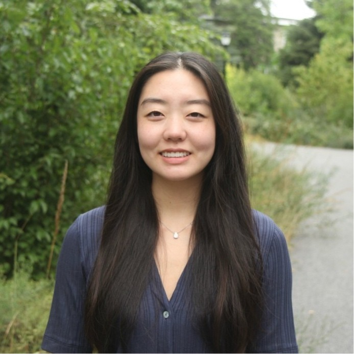

Stephanie Kim

Welcome to my website! I'm a rising junior at Swarthmore College studying CS and Biology.
I'm interested in Software Engineering, Computational Biology, Machine Learning, and more.
I'm a military brat and have moved 12+ times— I've lived in 9 states and 3 countries!
I adapt readily to new environments and love experiencing the different cultures and communities that each place has to offer.
Scroll to learn more about me and my journey!